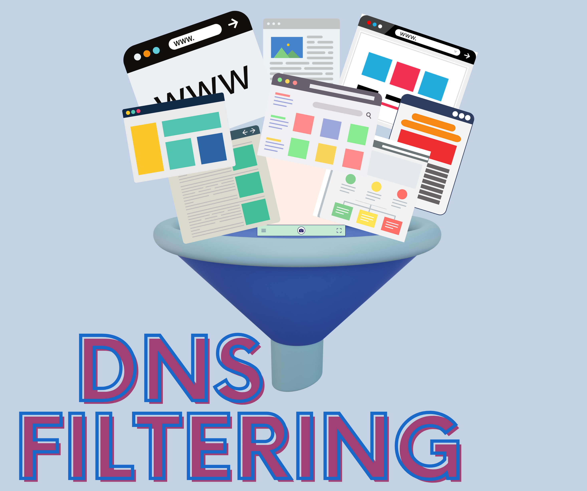
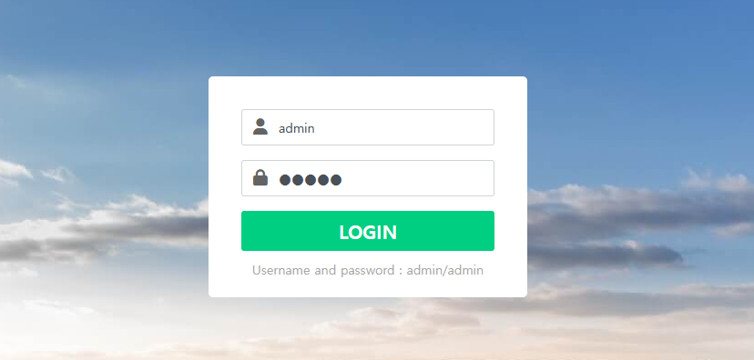
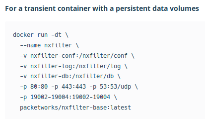
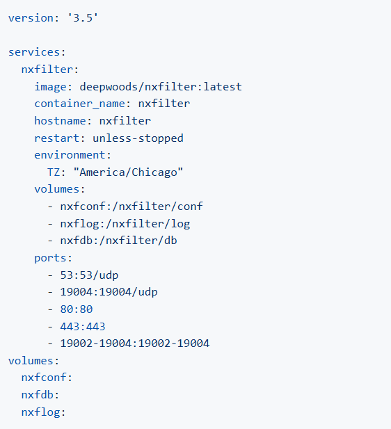

NXFilter is een DNS-filteringtool die wordt gebruikt om internetverkeer te monitoren en te controleren op basis van domeinnamen.
Built for web protection
NXFilter blokkeert ongewenste of schadelijke websites op basis van domeinnamen, voordat de gebruiker er verbinding mee kan maken. Dit werkt door DNS-verzoeken te onderscheppen en te controleren tegen vooraf gedefinieerde regels en lijsten.
Categoriegebaseerde filtering
NXFilter kan websites categoriseren (zoals sociale media, goksites, adult content, malware, phishing, enz.) en bepaalde categorieën automatisch blokkeren op basis van beleid. Dit is handig voor bedrijven en scholen die internetgebruik willen reguleren.
BYOD-Ondersteuning
NXFilter kan worden toegepast op Bring Your Own Device (BYOD)-omgevingen, zodat werknemers en studenten met hun eigen apparaten toch binnen het gefilterde netwerk blijven.

Create a website
Less overhead, more collaboration
Start with award-winning templates, dan customize to fit your style and professional needs.
- Corporate-based Business
- Creative Services
- New Business Innovation
- Online E-commerce
- Real Estate
- Portfolio
- Blogs
- Booking.com
- and more...

login interface
Het loginscherm van de webinterface die berijkbaar is met het ip-adres van de host (enviorment) gevolgd door het sub-domain. (Admin)

NXfilter Dockerfile-container
Alle parameters en configuraties die nodig zijn bij het aanmaken van de container en expose van de poorten. (Dockerfile)

docker-compose container
Configuraties van de yaml-file voor het maken van de compose-image en comtainer. (Docker-compose)